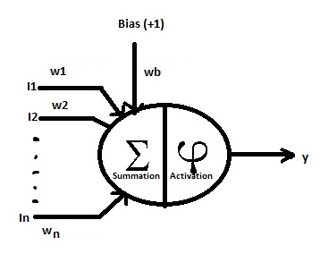
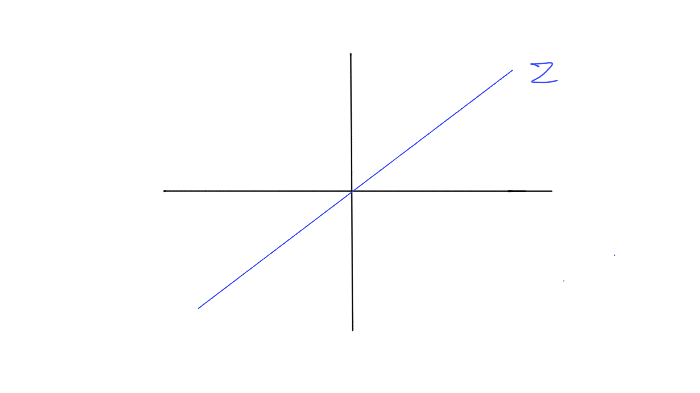
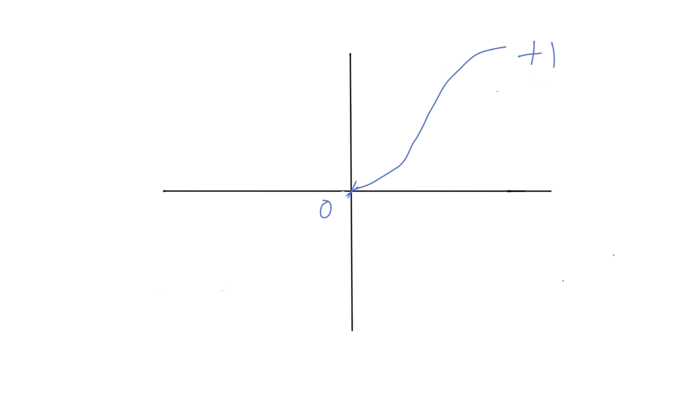
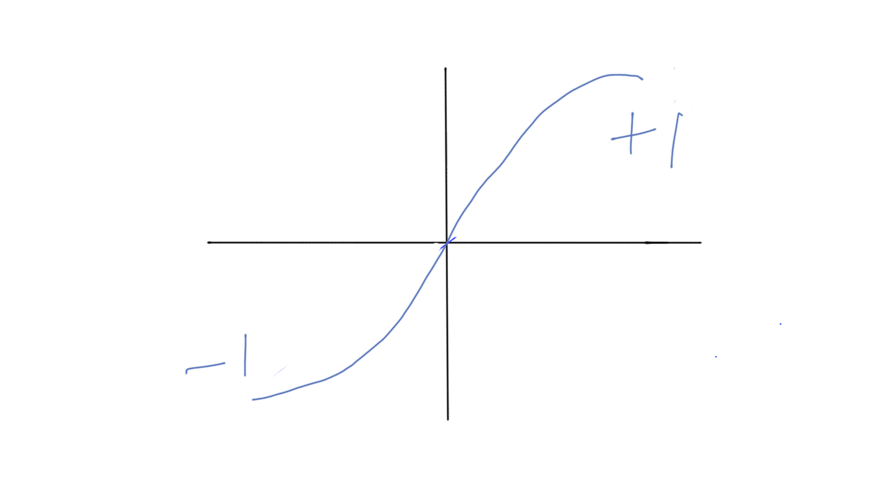
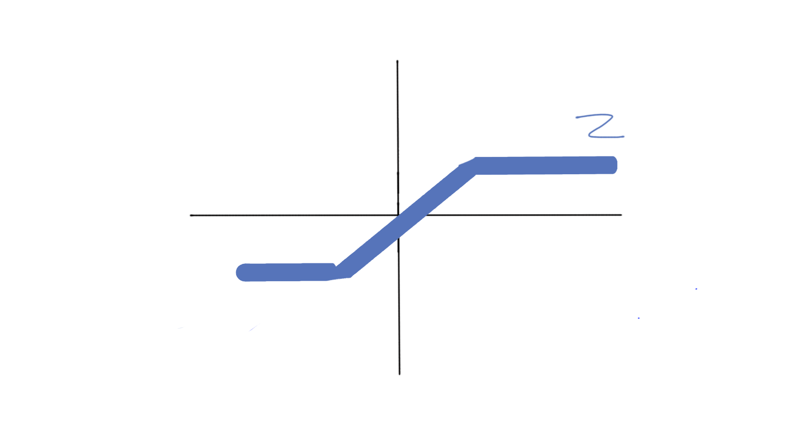
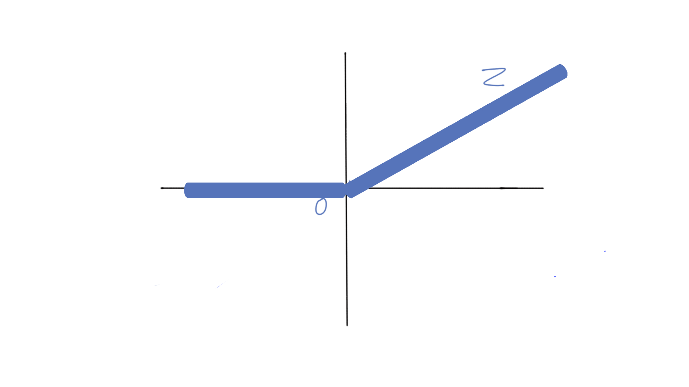

|
Prachodayan Enlightening Minds |
|
Based on the proposed architectures and
functionalities of a biological neuron, a model for artificial neuron is designed to meet the requirements
of machine learning.
Figure1.1 depicts the generalied model of an artificial neuron. In the figure,
'I1,I2,..In' represent the 'n' input values 'w1,w2,...wn' represent the weights of respective input values 'Bias' is a special constant input, taken +1 as input value in the figure. 'wb' represents bias weight. |
 Figure 1.1: generalized model of an artificial neuron |
Functions:
1. Summation: This function takes all the input values and corresponding weights and produces the weighted linear sum of it. Output, z = w1*I1 + w2*I2 + .... + wn*In + wb*Bias |
|
2. Activation: Activation or transfer function takes the linear weighted sum of the
inputs(z) and produces the activation value which may vary depending on the type of activation function
used.
|
|
Types of Activation functions:
1. Linear: This function produces linear weighted sum as the output. Output: linear_activation(z)=z (w1*I1 + w2I2 +..+ wnIn + wb*Bias) Output Range: -Infinity to +Infinity |
 Linear Activation Function |
2. Threshold: This function produces output based on the threshold value(t). Output: threshold_activation(z)=1 if z >= 0, &ems p; =0 if z<0 (considering '0' as the threshold value,t) Output Range: 0 or 1 |
|
3. Sigmoid: This function produces the sigmoid value as output Output: sigmoid_activation(z) = 1 / (1 + e- z) Output Range: 0 to 1 (continuous values) |
 Sigmoid Activation Function |
4. Tanh: This function produces the hyperbolic tangent value of linear weighted sum as output Output: tanh_activation(z) = tanh(z) Output Range: -1 to 1 (continuous values) |
 Tanh Activation Function |
5. Piecewise Linear Function: This function produces continuous output as per the different output equations (formulae) defined on z value. An example piecewise linear function is given below. Output: piecewise_linear_activation(z) = -0.5, if z <= - 0.5 &e msp; = z, if -0.5 < z < 0.5 &e msp; =+0.5, if z>=0.5 (taking -0.5 to +0.5 as the interval) Output Range: depends on the interval of the functions (equations or formulae) defined on z. In the above example, range is -0.5 to +0.5 continuous values. |
 Piecewise Linear Activation Function |
6. Relu Function: Stands for Rectified Linear Unit. This function produces 0 to +Infinity continuous values as output based on z value Output: relu_activation(z) = 0, if z < 0 &ems p; =z, if z>=0 if Output Range: 0 to +Infinity |
 ReLU Activation Function |
7. Softmax Function: This function takes a set of real numbers as input and produces a set of real numbers as output. The number of output values represent the number of classes trained. Each value in the output represents the probabilty of the input values being classified as the corresponding output class. Example, if trained classes are dogs, cats, hens, none of these. Suppose the output values are [0.842,0.041,0.002,0.113]. This means the chances of the input vector being classified as dogs, cats, hens and none of these are 84%,4%,1%,11% respectively. Output: relu_activation(z) = ejz/(∑(ekz))[j=1,2,..k] k represents total number of classes Output Range: All output values sum to produce 1- [Probability]. (100% chances distributed to various classes) |
|
8. Signum Function: This function produces -1 or 0 or +1 values based on z value Output: signum_activation(z) = -1 if z<0, &emsp ; =0 if z=0 &e msp; =+1 if z>0 Output Range: -1 or 0 or +1 (discrete values) |
|
9. Arctan Function: This function produces inverse hyperbolic tangent value of z as output. Output: arctan_activation(z) = tanh-1(z) Output Range: -π/2 to +π/2 |